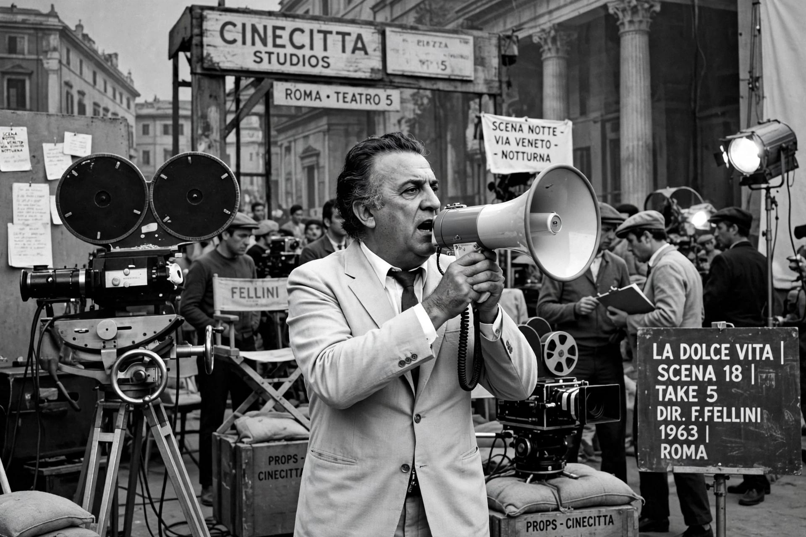

Cinema of Italy
From Wikipedia, the free encyclopedia

The cinema of Italy has been one of the world's most influential national cinemas since the silent era. It gave film neorealism — with Roberto Rossellini's Rome, Open City and Vittorio De Sica's Bicycle Thieves — the auteur cinema of Federico Fellini, Michelangelo Antonioni and Luchino Visconti, and popular genres from the Spaghetti Western to the Commedia all'italiana.
Early cinema and the Fascist era
Italy was a silent-film leader with epics such as Cabiria (1914). Under Mussolini the state built the Cinecittà studios (1937) and the Venice Film Festival (founded 1932, the world's oldest), promoting 'white telephone' escapism while subsidising the industry.
Neorealism and the golden age
Born from wartime devastation, neorealism (1945–early 1950s) shot on real locations with non-professional actors: Rossellini's Rome, Open City (1945), De Sica's Shoeshine and Bicycle Thieves (1948), and Visconti's La Terra Trema reshaped world cinema. In the 1950s–60s Fellini (La Strada, La Dolce Vita, 8½), Antonioni (L'Avventura) and Pier Paolo Pasolini led Italian art cinema, while Sergio Leone's Dollars Trilogy reinvented the western.
Decline and renewal
Television competition, the collapse of the studio system and subsidy politics shrank the industry from the 1980s, though successes continued: Giuseppe Tornatore's Cinema Paradiso (1988), Roberto Benigni's Life Is Beautiful (1997) and Paolo Sorrentino's The Great Beauty (2013) all won Oscars; Italy has won that award more often than any other country.